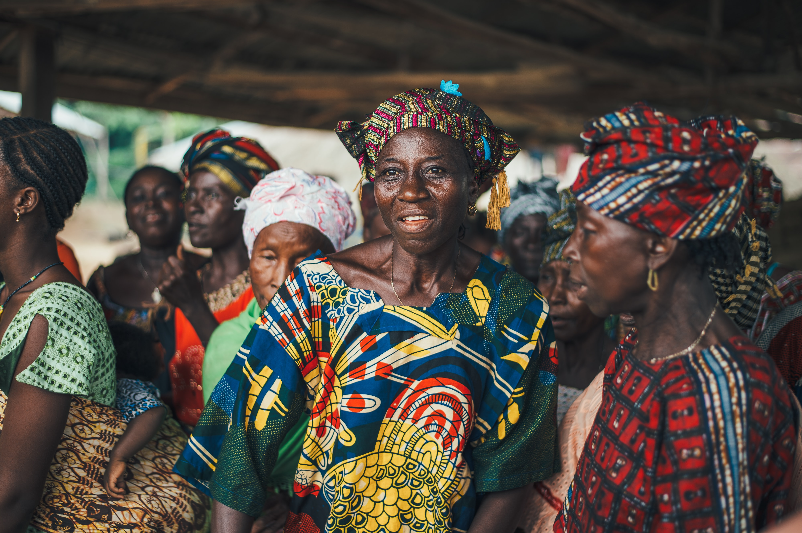

Finally, Anambra state is ready for it's first Cultural carnival, the carnival will be a two day event, from 15th of april to 16th.
The carnival is aimed to showcase the beautiful culture of the Anambra people and to unite its people with its origin.
There will be historical displays of the origin of Anambra state and the igbo people as a whole.
Anambra cultural Carnival is already attracting the attention of the international communites as many foreign bodies are already interested in our rich culture.
.jpeg)
Anambra carnival is a two days celebration filled with exciting events.
The highlight of Anambra carnival is the street parade that features the "Battle of the Ogene groups".
The parade is only a slither of Anambra carnivals attractions.
There are ceremonies, concerts, art shows, street parties, masque events, sporting events and non-stop parties.
Anambra state is one of the 36 States of Nigeria, located in the southeastern region of the country.
It was formed in 1976 from the former East Central state, the state is named after the Anambra river.
Anambra Carnival has scheduled its events in a very splendid way.
The main Carnival events will occur in the last day of the carnival.
The carnival Programme is as follows:
Anambra carnival officially begins with a Tree lightening ceremony.
Inthe first day of the carnival there will be musical performances, food competitions,
a soldarity march, street parties, fashion shows, a prestigious essay writing competition,
art shows, traditional dances and masque events.
on the second day, there will be crowning of the carnival kings and queens for each band,
there will cultural dancing competions and excution to some historical sites in anambra state.
at the end there will be a mega party to mark the closing of the carnival.
There are many musical concerts throughout the carnival that feature performances by
local and international acts including Phyno, Flavour, p-square etc.
we recommend you check out some of the local Nigerian artists out if you haven't
heard of them, it's worth having a look on youtube as they won't disappoint.
Do not miss the Anambra carnival African Food Expo! This is an absolute highlight of the carnival! you will be able to try some amazing meals that you have most likely never had before! The air is filled with so many intoxicating aromas.
A carnival theme guides all the carnival bands who have to interpret
and then represent this theme through their costumes, music, dances, floats
and displays.
The Anambra Carnival parade features 50,000 costumed revellers who performance
perform in five major carnival groups compete against each other in hopes of
winning the tittle for the best band.
The parade takes place over a 12km parade route and it is quite a spectacle.
It is filled with colour sparkle, incredible floats and costumes.
Hundreds of thouands line the streets to watch the parade and the atmosphere
is electric.
The Anambra Cultural carnival events will occur in the city of Awka. The majority of the events will take place in Honeywell hotel in umuchu. The parade marches through many city streets in Anambra.
BY Plane: You can fly to one of these airports
and board a taxi to drive you straight to Anambra.
The airports doesn't connect to any international cities but is
serviced by flights mainly from Lagos it is about an hour flight.
for some quotes on flights check here.
By Road: Anambra is a 6 - 7 hour drive from Lagos. There are various car and transport companies that travel from most areas of Nigeria and other major cites including lagos, Abuja, Yola, Port-harcourt. These companie include Cross Country, Abc Transport, Peace Mass Transit, The Young shall Grow and Elim Tours. Get a quote for a rental car here.
BY Boat: There is actually a regular boat service from various part of Delta coastline that transports both people and vehicles.
There are plenty of buses, cabs and motocycles available to move around the State. The roads are well paved and tarred in Anambra and there is less traffic on the roads compared to cities like Lagos, so it is relatively easy to move around.
There are plenty hotel options in Anambra from budget all the way
to luxurious hotels. Price range from $3 to $90us a night. We recommend
booking early because over two million people are likely to show up
for the carnival.
check out some accomodation deals here.
Anambra state is in eastern Nigeria. There are plenty of Amazing attractions to see in Anambra State including:
Anambra state boasts way more than most people are aware of.
If you find Yourself in Anambra Cultural Carnival then you must visit some
of these places.
check some tours here.
Yes, Nigeria Doesn't have the best reputation of being the safest
country but the Anambra state Government has assured maximum security
throughout the whole cultural carnival.
However, pickpocketing will be common so be aware of your valuables at all
times or even hide your valuables in a safe place like a security pocket.
It is even better during the more crowded events to just leave them back in
yo